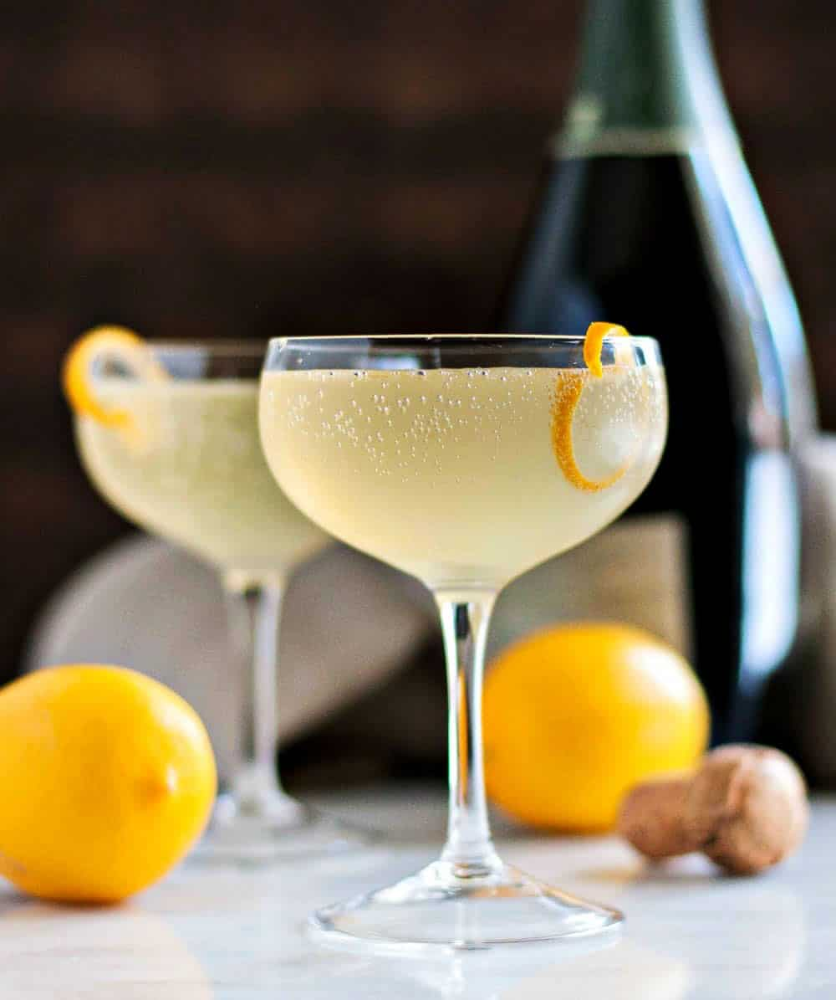

French 75

Description
A classic gin-based champagne cocktail dating back to the early 1920s.
The French 75 is a perfect alternative to the boozy brunch mimosa combining gin, champagne, lemon juice, and sugar.
Ingredients:
- 1.5 oz gin
- 3/4 oz fresh lemon juice
- 3/4 oz simple syrup
- 2 oz champagne
- Spiral lemon twist for garnish
Steps:
- Combine gin, lemon juice, and simple syrup in cocktail shaker
- Fill shaker with ice and shake vigorously for 10-15 seconds
- Strain cocktail into desired glassware (flute or coupe glass preferred)
- Top with champagne; garnish with lemon twist